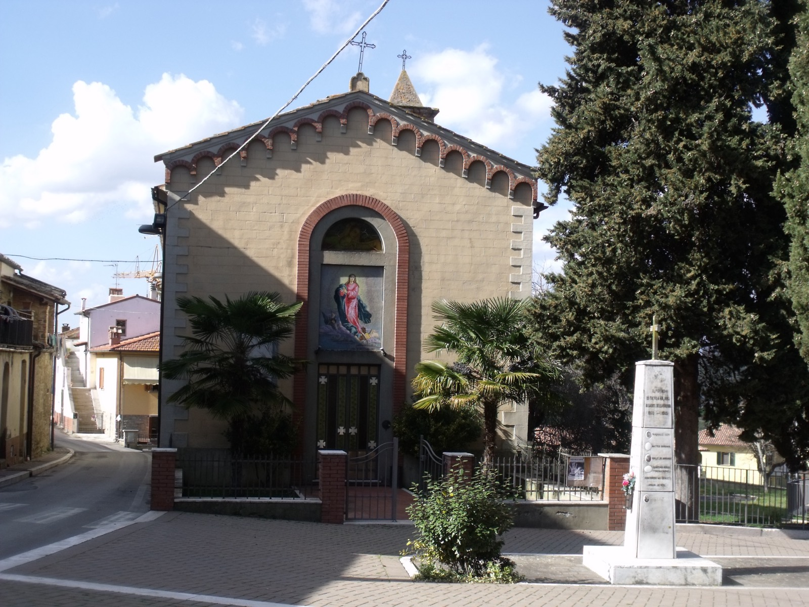

Storia
Pieve a Maiano è un'antica località situata ai confini con il comune di Arezzo, abitata fin dall'epoca romana: lo dimostrano ceramiche del I e II secolo d.C. ritrovate nella zona, oltre ai resti di una fornace romana in località Bosco di Vallimboi. Il nome della frazione deriva dalla presenza storica di una pieve, oggi scomparsa; a testimonianza dell'antichità dell'insediamento restano anche i Poderi Montoto I e II, gruppi di case coloniche costruite sui resti di un fortilizio longobardo del VII-VIII secolo. Nelle vicinanze è documentata dal 1198 anche l'esistenza dell'ospizio dello Spedaluccio, lo stesso che dà il nome alla frazione di Albergo.
Chiese e monumenti

La Chiesa di Santa Maria Assunta, edificio ottocentesco, conserva una campana del 1358 proveniente dalla vicina località di Montoto. L'antica pieve che aveva dato il nome al paese è invece scomparsa da secoli, e oggi ne resta solo il toponimo.
Punti di interesse
Il borgo è circondato da un paesaggio agricolo di oliveti e colline, rappresentativo della campagna della Val di Chiana. Nelle vicinanze si trova la località di Casa al Cincio, in un suggestivo contesto collinare.
Vita locale
Nelle ultime settimane di agosto Pieve a Maiano ospita la Sagra del Cinghiale, uno degli appuntamenti gastronomici più attesi del comune, organizzato dal circolo ricreativo locale.
Le fonti usate per il sito sono elencate nella pagina Fonti.